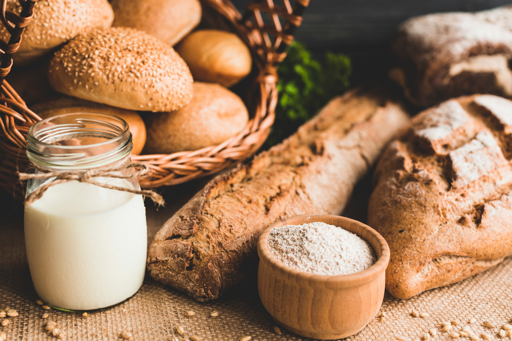
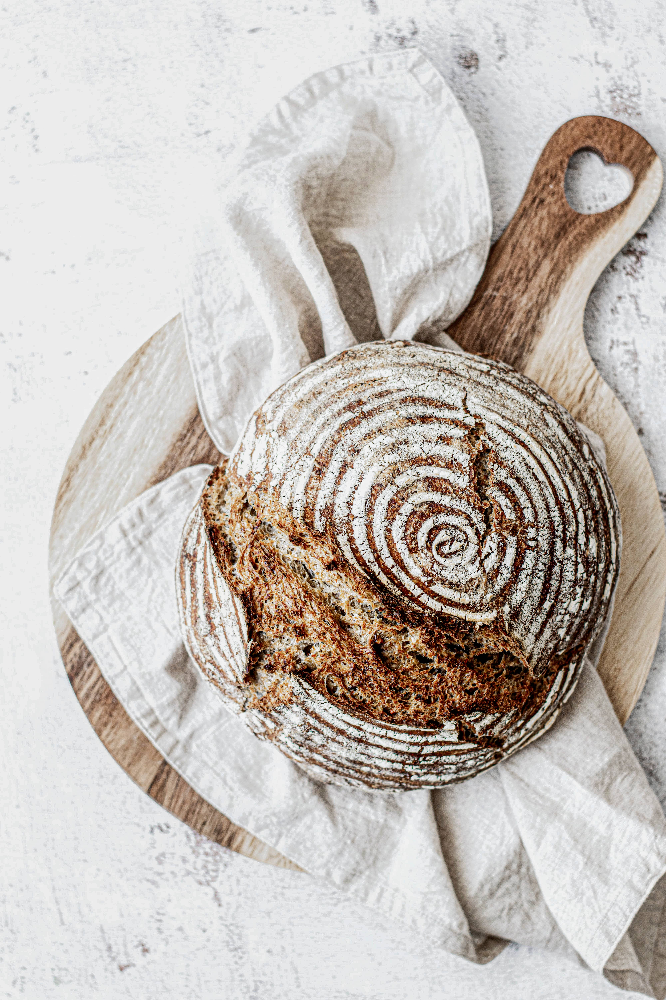
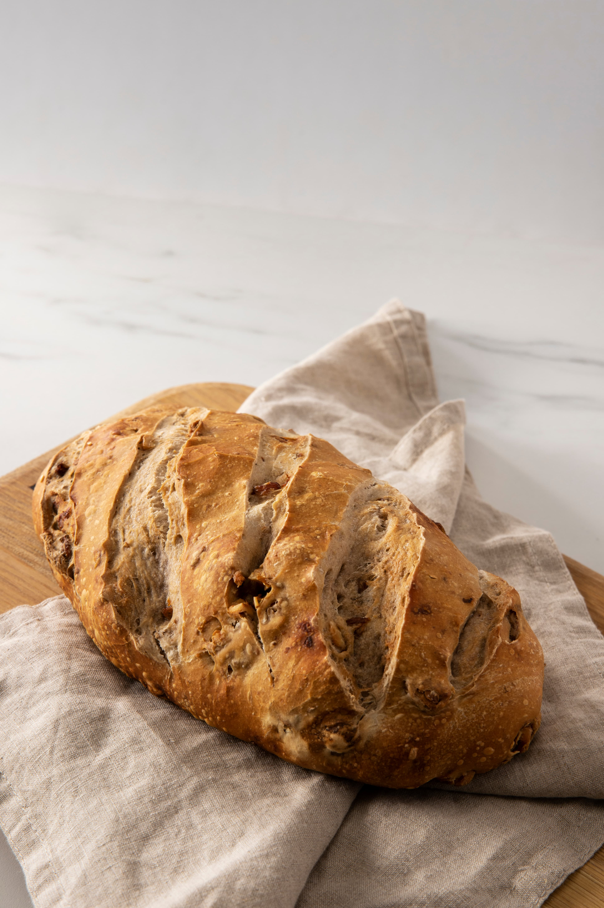
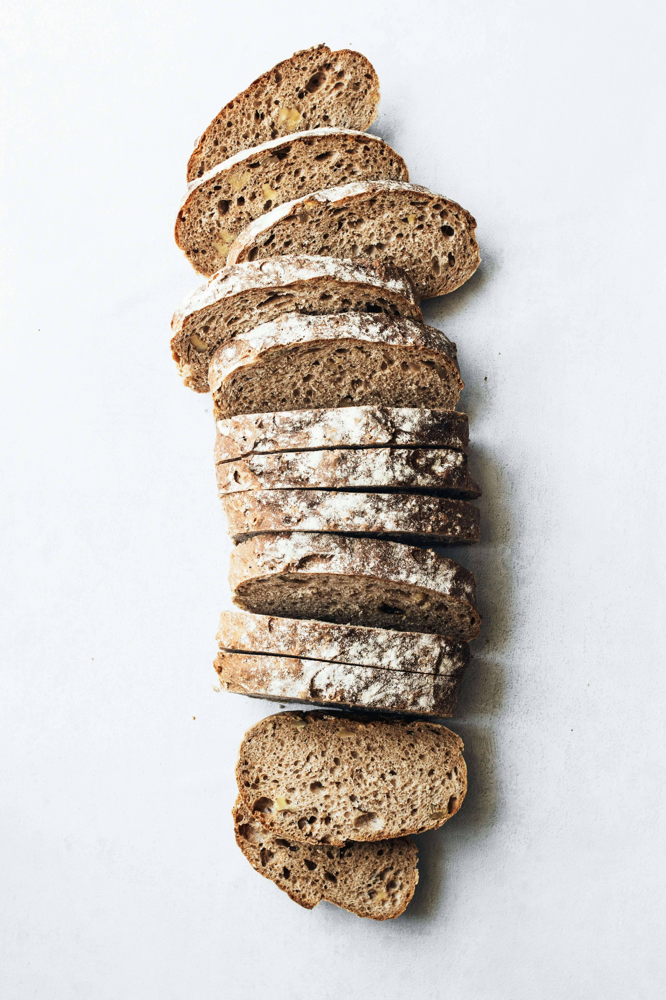
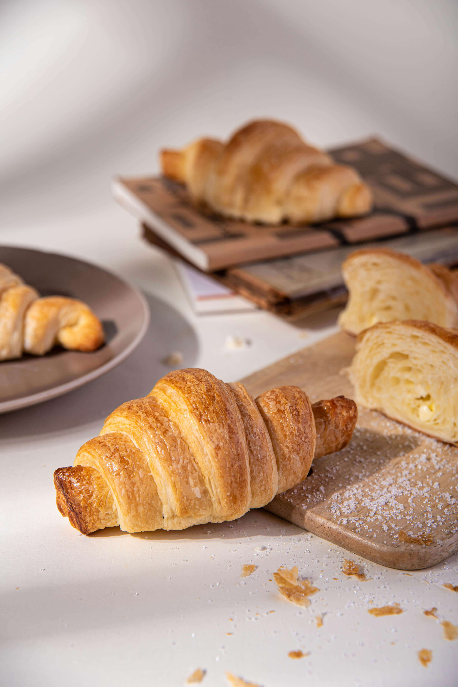
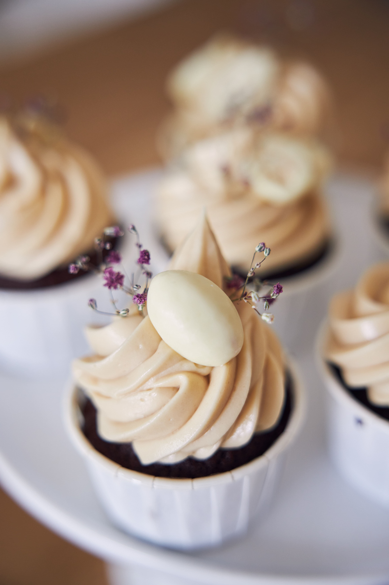
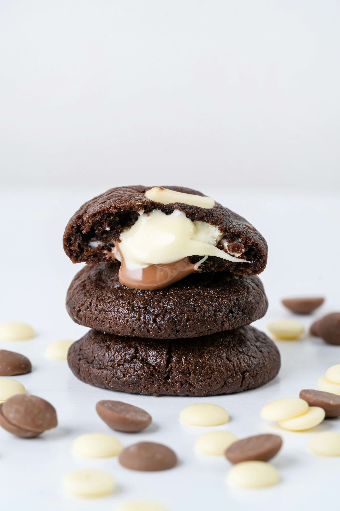

Welcome to Keep Rising Artisanal Bakery
At Keep Rising Artisanal Bakery, we're more than just a small back-alley bakery — we're a community of bread and pastry lovers brought together by tradition, quality, and care. Our loyal customers inspire us every day, and we take pride in baking fresh, wholesome treats while staying true to our sustainability ethos. By offering easy pre-orders and baking only what's needed, we reduce food waste and make sure everyone can enjoy their favorite bakes.
Our History
Founded in 1995, Keep Rising Artisanal Bakery began as a small back-alley bakery with a passion for handcrafted bread and pastries. From the start, we focused on quality, care, and sustainability. Over the years, our loyal customers have grown into a close-knit family, inspiring us to keep innovating while honoring our traditions. Together, we rise — with good food, good people, and a lighter footprint on the planet.
Our Products
Our artisanal bakery is dedicated to crafting moments of comfort and joy. With rustic loaves of bread, golden buttery croissants, and an irresistible selection of sweet treats, we combine traditional methods with the finest ingredients to create flavors that are as heartfelt as they are delicious.
Sourdough Bread

Freshly baked loaves with a rustic
crust and soft, wholesome flavor.
Multigrain Bread

A wholesome mix of grains for rich, nutty flavor.
Hi Fiber Sandwich Bread

Light, hearty, and packed with goodness.
Croissants

Buttery, flaky layers that
melt in your mouth.
Cupcakes

Little bundles of joy topped
with sweet swirls.
Cookies

Crispy, chewy, and baked
to perfection.